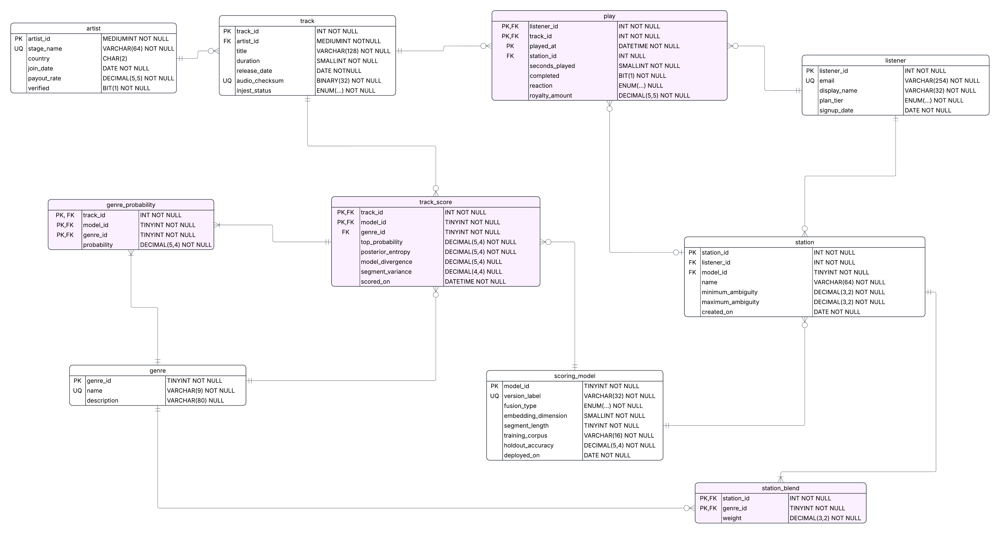

The first physical data model, drawn by hand before the Workbench build. It is kept here for reference. The submitted model is the final version.

mk1 already has all ten tables, every column and type from the requirements analysis, the composite primary keys on the four associative tables, the five UNIQUE columns, and the right cardinality on 12 of its 13 relationship lines.
| Gap in mk1 | Final version |
|---|---|
| Drawn by hand. Nothing tied it to the requirements analysis, so a type or name could drift from the document without anyone noticing. | Generated: build_ddl.py writes the schema from the requirements analysis, and Workbench reverse-engineers the diagram from that schema. |
| Not the course notation. The PK/FK/UQ text column and the NULL/NOT NULL suffixes are not the MySQL Workbench icons used in Unit 4. | Workbench EER diagram: key icons, filled and hollow diamonds for NOT NULL and nullable, red icons for foreign keys. |
| No index lists. Unit 4 shows the index that every PRIMARY KEY, FOREIGN KEY and UNIQUE constraint creates. | Every table lists PRIMARY, its uq_ indexes and its fk_ indexes. |
| Every line solid. Identifying and non-identifying relationships look the same. | Solid lines for identifying relationships (all four associative tables), dashed for non-identifying ones. |
| One wrong line end. Genre to Genre Probability shows one-or-many at the Genre Probability end. That says every genre must already have a probability row, which the conceptual model does not say and a junction table cannot enforce (Unit 4). | Zero-or-many, matching the conceptual model. |
Typos. injest_status for ingest_status; NOTNULL on track.artist_id and track.release_date; join_date where the requirements analysis says Joined Date. | ingest_status, NOT NULL and joined_date, all taken directly from the document. |
One unmarked column. artist.country has neither NULL nor NOT NULL, while every other column has one. | Hollow diamond: nullable, as the requirements analysis says. |
| CHECK rules nowhere. The probability, ambiguity and weight ranges exist only in the prose. | 16 CHECK constraints in crossfade_schema.sql, tested against eight deliberately bad inserts. Workbench cannot draw them. |